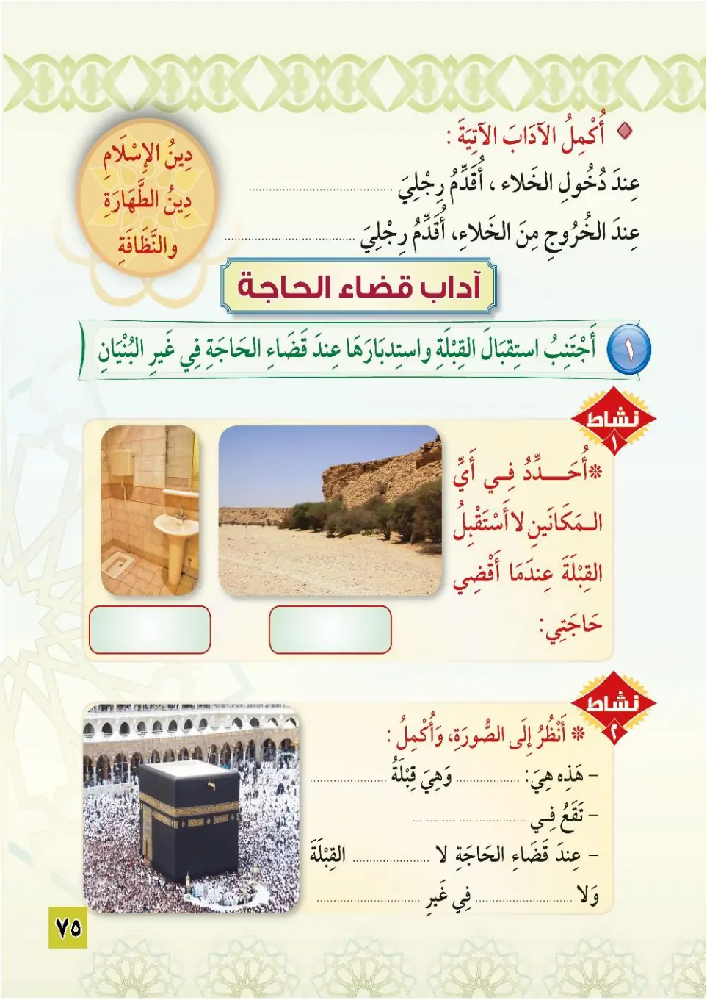
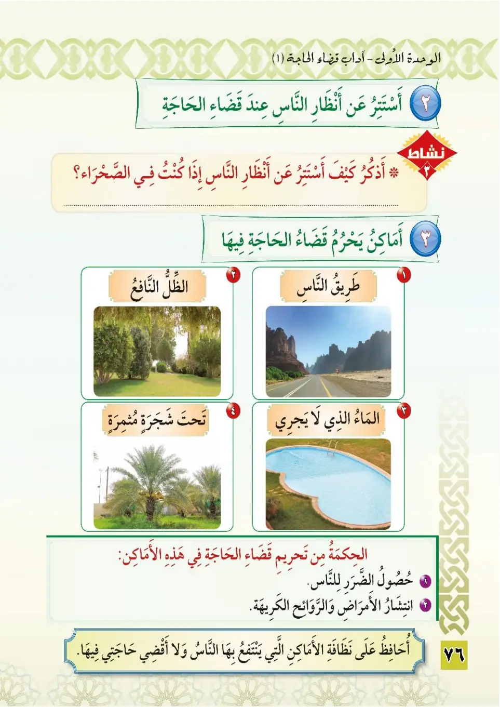
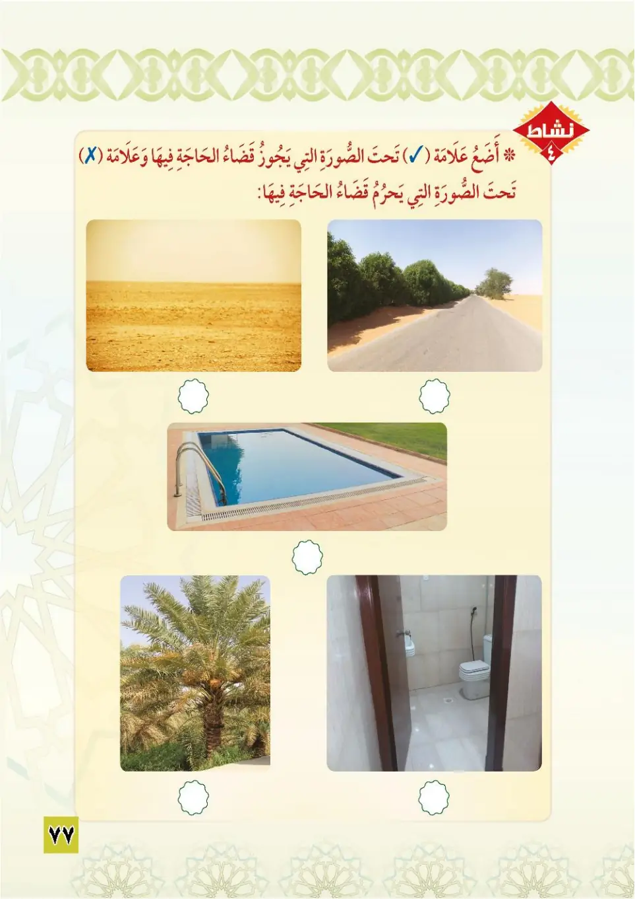
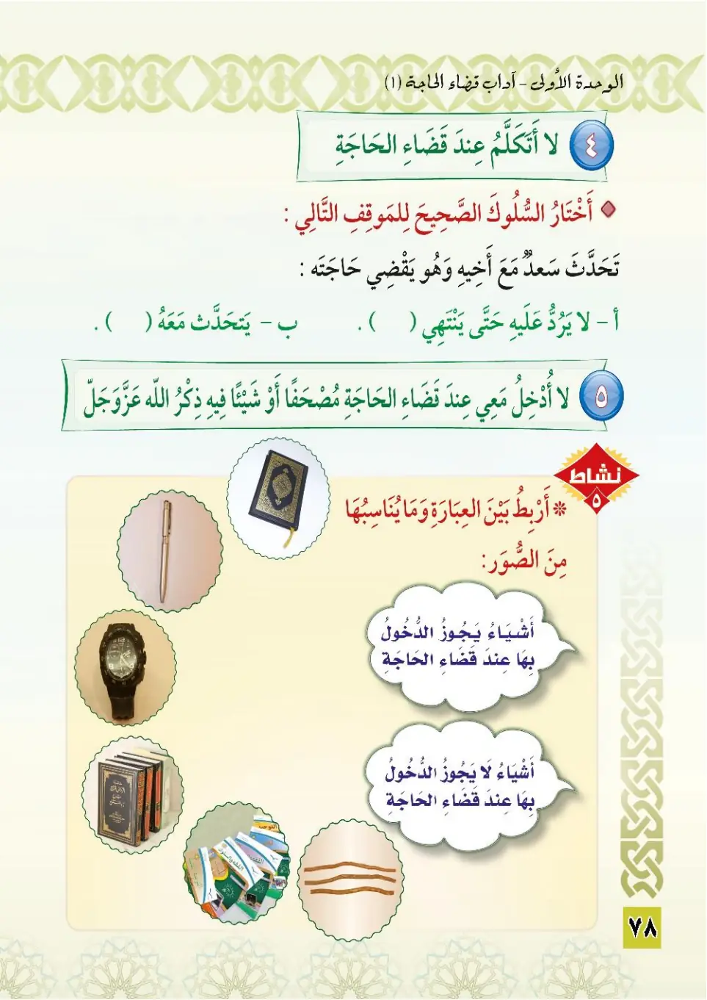
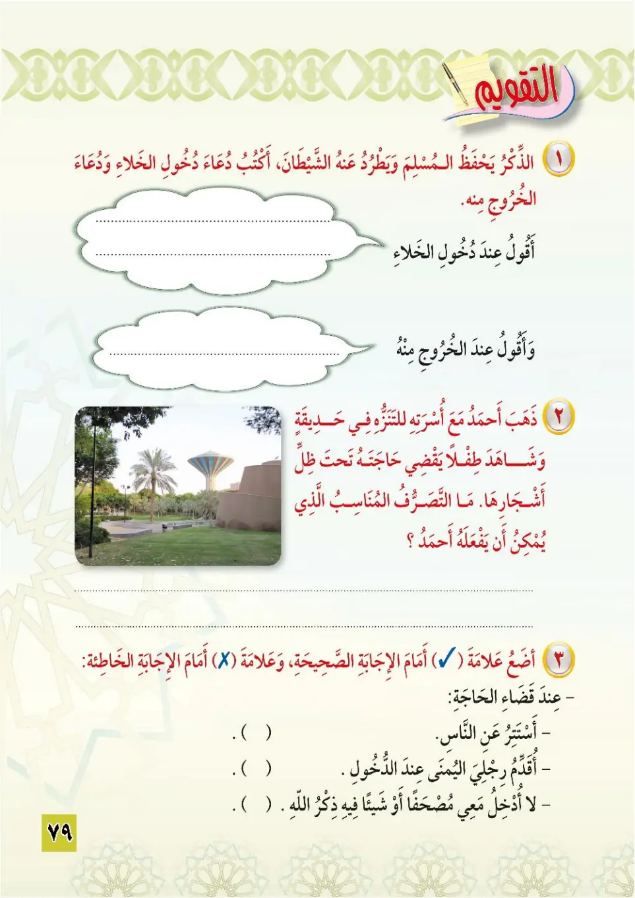

Stage 3·المرحلة الثالثة💧 Unit 1
آدَابُ قَضَاءِ الْحَاجَةِ (١) Manners of Relieving Oneself (1)
From the Textbookpp. 76–80





دين الإسلام دين الطهارة والنظافة. من آداب قضاء الحاجة: ١- الاستتار عن أنظار الناس.
Dinu al-islam dinu at-tahara wan-nadhafa. Min adabi kada'i al-haja: al-istitar 'an anzhari an-nas.
The religion of Islam is the religion of purity and cleanliness.<br>Among the manners of relieving oneself:<br>1. Concealing oneself from the sight of people.
இஸ்லாமிய மார்க்கம் தூய்மைக்கும் சுத்தத்திற்குமான மார்க்கம்.<br>மலங்கழிக்கும் ஆசாரங்களில் ஒன்று:<br>1. மக்களின் பார்வையிலிருந்து மறைந்து கொள்வது.
٢- أن أجنّب استقبال القبلة واستدبارها عند قضاء الحاجة في غير البنيان.
2. An ajanniba istiqbala al-qiblah wa istidbariha 'inda kada'i al-haja fi ghayri al-bunyan.
2. To avoid facing the Qiblah or turning one's back towards it when relieving oneself in the open (outside buildings).
2. கட்டிடங்களுக்கு வெளியே மலங்கழிக்கும்போது கிப்லாவை முன்னோக்கியோ பின்னோக்கியோ இருக்காமல் இருப்பது.
أماكن يحرم فيها قضاء الحاجة: ١- طريق الناس. ٢- الظل النافع. ٣- الماء الذي لا يجري. ٤- تحت شجرة مثمرة. الحكمة من تحريم قضاء الحاجة في هذه الأماكن: حصول الضرر للناس، وانتشار الأمراض والروائح الكريهة.
Amakin yahrumu fiha kada'u al-haja: 1. tariqu an-nas, 2. adh-dhillu an-nafi', 3. al-ma'ulladhi la yajri, 4. tahta shajaratin muthmirah.
Places where it is forbidden to relieve oneself:<br>1. The people's pathway.<br>2. Beneficial shade.<br>3. Still water.<br>4. Under a fruit-bearing tree.<br>The wisdom behind forbidding relieving oneself in these places: it causes harm to people and spreads diseases and unpleasant odours.
மலங்கழிக்க தடைசெய்யப்பட்ட இடங்கள்:<br>1. மக்கள் செல்லும் பாதை.<br>2. பயனுள்ள நிழல்.<br>3. நீர் ஓடாத தண்ணீர்.<br>4. பழமரத்தின் கீழ்.<br>இதற்கான விவேகம்: மக்களுக்குத் தீங்கு, நோய்கள் மற்றும் துர்நாற்றம் பரவல்.
أحافظ على نظافة الأماكن التي ينتفع بها الناس، ولا أفضي حاجتي فيها.
Uhafizhu 'ala nadhafati al-amakin allati yantafi'u biha an-nas, wa la ufdhi hajati fiha.
I keep clean the places people benefit from, and I do not relieve myself in them.
மக்கள் பயன்பெறும் இடங்களைத் தூய்மையாக வைத்திருக்கிறேன்; அவற்றில் மலம் கழிப்பதில்லை.